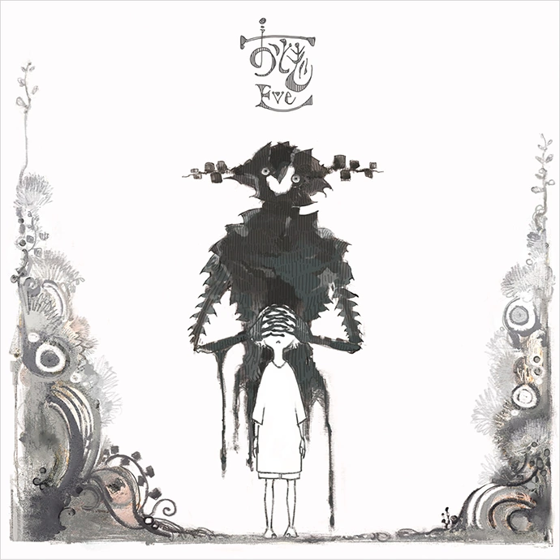

Eve was a member of "RIOT OF COLOR" in 2014, before releasing his debut multi-platform album, Wonder World in 2015. He entered the music industry by singing covers of popular music on Niconico. He signed to Toy's Factory in 2019, moving away from his Independently Owned Label, Harapeco Records, of whom Eve had produced under since the release of his debut album, Wonder Word. He was also a guest in "School of Lock!" by Tokyo FM.
His music has been featured as the theme song for various anime such as Dororo (Dark Night / 闇夜), Jujutsu Kaisen (kaikaikitan / 廻廻奇譚), Josee, the Tiger and the Fish (Ao No Waltz / 蒼のワルツ), Chainsaw Man (Fight Song / ファイトソング), and My Hero Academia (Bokurano / ぼくらの). Official Number (album name) was his first charting album at the time, peaking at 35 and 99 on the Oricon Albums Chart and Billboard Japan Hot 100. Eve released Otogi on 6 February 2019. Otogi was Eve's highest chart position at the time, peaking at 6 and 4 on the Oricon Albums Chart and the Billboard Japan Hot 100 respectively, and while riding the continued success of Bunka, can be regarded as an album that cemented Eve into a spotlight within the Japanese Music Market.
